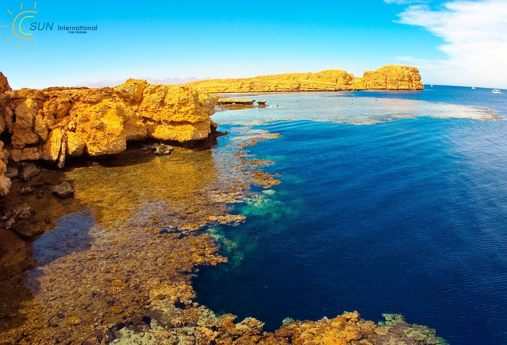

Ras Mohammed National Park is one of Egypt's most famous natural reserves. Located at the southern tip of the Sinai Peninsula, it is known for its crystal-clear waters, colorful coral reefs, and diverse marine life. It is one of the world's top destinations for snorkeling and scuba diving, attracting visitors from around the globe.